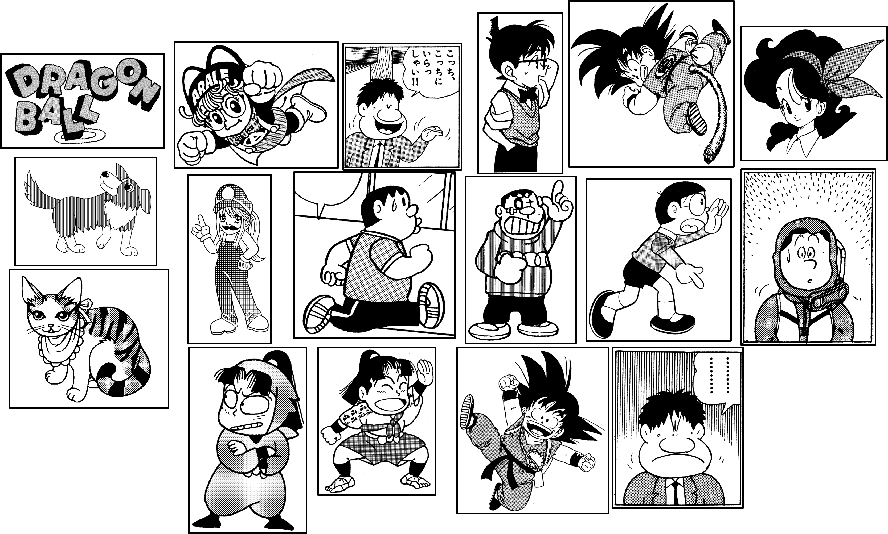
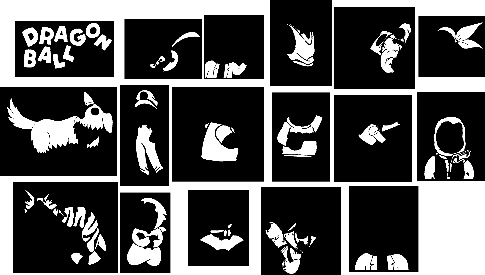
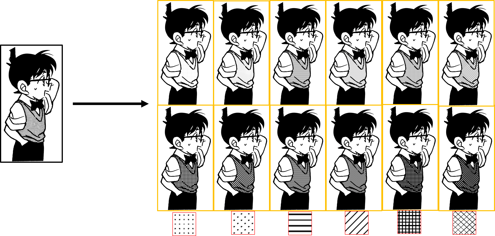
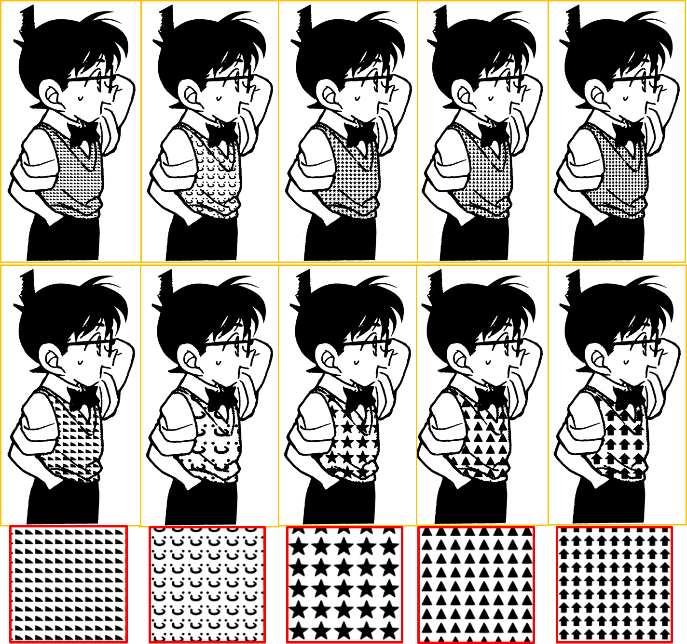
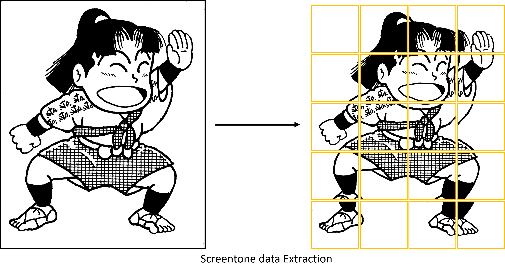
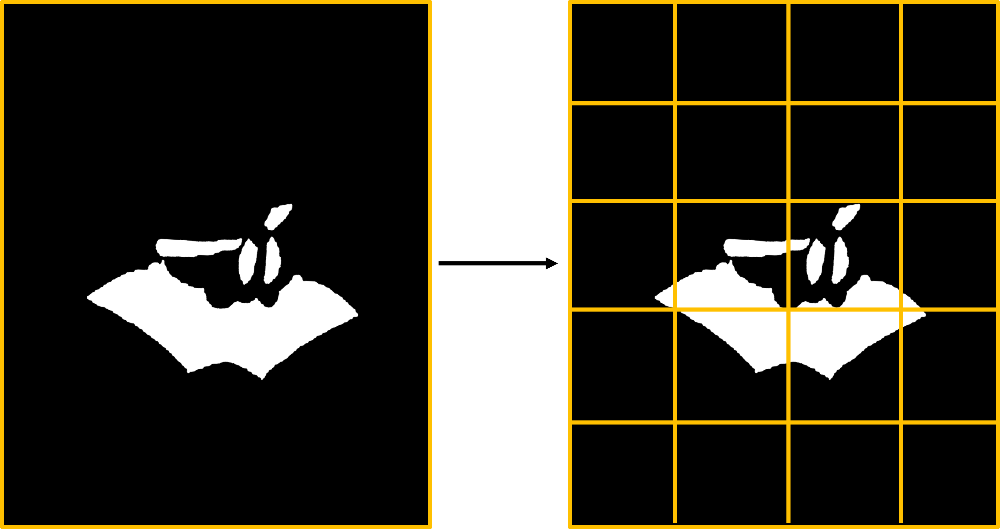
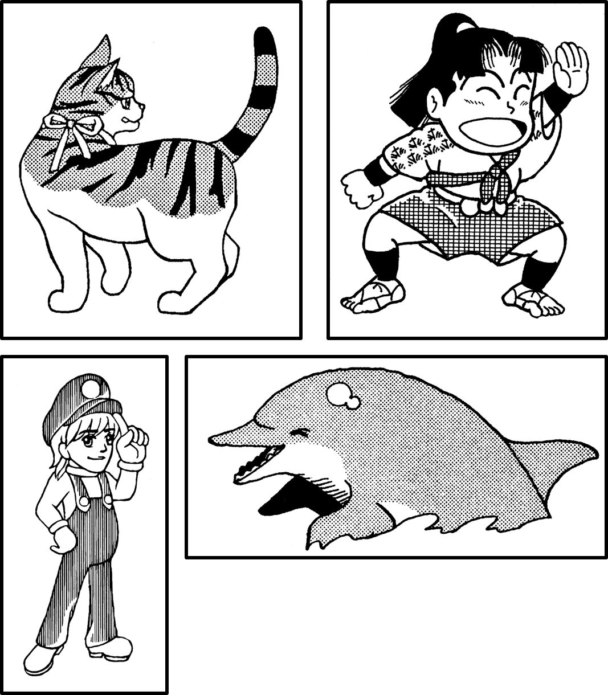

Use Fully convolutional networks : 1.Training Data Original manga   Generate Normal Screentone Generate Irregular Screentone   Extraction to training data(512x512)   2.Testing Data Original manga  Testing Screentone Data